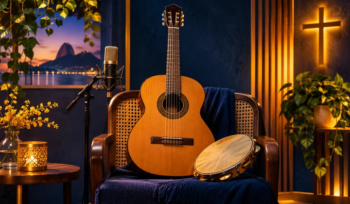
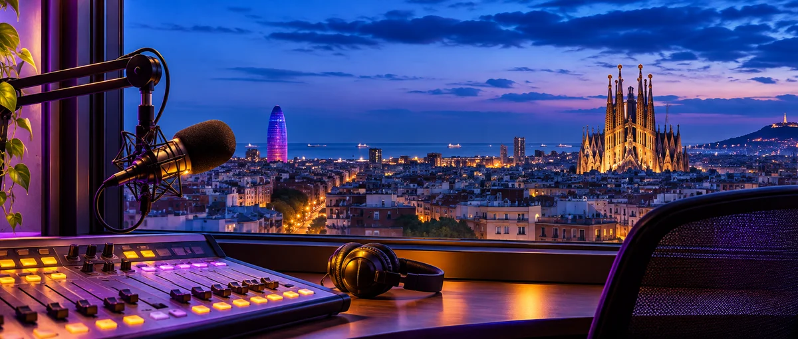
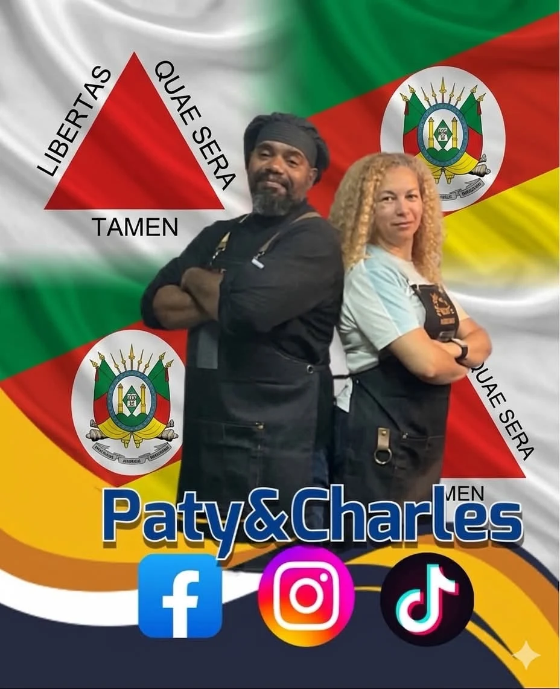
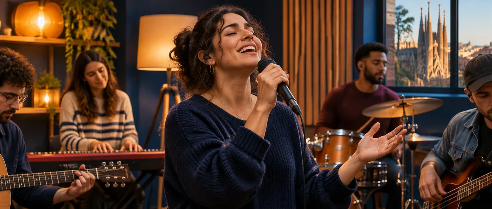
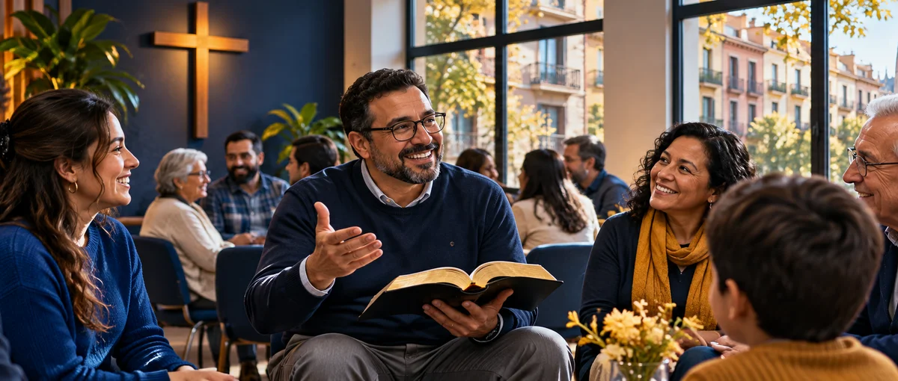

En Manantial FM la música nos une. Descubre diferentes sonidos y expresiones de fe, desde los clásicos del góspel hasta los ritmos más actuales. Esta selección es orientativa y no representa un horario fijo: nuestra programación está en renovación.
🎤 Urbano y contemporáneo
Hip hop cristiano · Rap gospel · Trap cristiano · Reguetón cristiano · Pop cristiano · Rock cristiano · Electrónica cristiana
Jazz · Blues · Soul · R&B · Funk · Góspel tradicional · Country gospel
🇧🇷 Brasil y ritmos del mundo

Gospel Brasil · Bossa nova gospel · Samba gospel · Reggae cristiano · Música latina cristiana · Flamenco · Música andina
Los estilos pueden variar según la emisión. Próximamente anunciaremos la nueva programación.
📅 Próximamente: programación de noche

Estamos preparando estos espacios para su emisión diaria. Horarios previstos (hora de Barcelona), pendientes de activación y confirmación.
🕗 20:00 — Leyendas del Gospel 🕘 21:00 — Mujeres de la Biblia 🕙 22:00 — Hombres de la Biblia 🎙️ La Otra Mejilla — todos los martes, próximamente (hora por confirmar)
Próximamente. Estos horarios todavía no están en emisión y pueden ajustarse.
❤️ Nuestra misión: que nadie pierda la esperanza

Detrás de cada persona que atraviesa una situación difícil hay una historia, un nombre y una vida que merece respeto. Nadie debería sentirse invisible, olvidado o solo.
En Manantial FM creemos que la fe también se expresa con gestos sencillos: una mano tendida, una conversación que reconforta, un plato de comida o una prenda de abrigo. Nuestro deseo es acompañar especialmente a las personas sin hogar y a quienes más lo necesitan, sin juzgar y con el corazón abierto.
Queremos unir fuerzas con personas y entidades solidarias para conseguir alimentos y ropa, facilitar servicios de peluquería y buscar lugares donde las personas puedan ducharse y recuperar bienestar y dignidad. Son objetivos que iremos desarrollando según los recursos y colaboradores disponibles; no son servicios garantizados actualmente.
No disponemos de refugio ni ofrecemos alojamiento. Pero sí queremos ofrecer algo que puede ser el comienzo de un cambio: cercanía, escucha y esperanza.
Desde Barcelona para las naciones. Manantial FM: un mensaje positivo y tu radio amiga.
La Palabra que inspira nuestra misión
«Porque tuve hambre, y me disteis de comer»
Mateo 25:35 · RVR1960
«Hijitos míos, no amemos de palabra ni de lengua, sino de hecho y en verdad»
1 Juan 3:18 · RVR1960
«Así que, según tengamos oportunidad, hagamos bien a todos»
Gálatas 6:10 · RVR1960
CAMPAÑA DESTACADA · RECOGIDA SOLIDARIA DE ALIMENTOS
🥫 Campaña solidaria: Un alimento, una esperanza
❤️ Un kilo de comida, un kilo de amor
Recogemos alimentos donados para entregarlos a personas y familias en riesgo de exclusión social, especialmente quienes viven situaciones de vulnerabilidad o carecen de hogar.
Hay personas en riesgo de exclusión social para quienes llenar la despensa es un desafío diario. Un pequeño gesto puede convertirse en una gran ayuda.
Queremos reunir alimentos no perecederos para apoyar a personas y familias en situación de vulnerabilidad: arroz, pasta, legumbres, conservas, aceite y leche de larga duración, siempre en envases cerrados, dentro de su fecha de consumo y en buen estado.
❤️ ¿Quieres donar alimentos? Puedes entregárnoslos en el punto de recogida que anunciaremos o consultarnos para que nuestro equipo valore recogerlos directamente, según la zona y la disponibilidad. Nosotros organizaremos su entrega posterior a personas y familias que los necesiten. ¿Quieres ayudar también como voluntario? Escríbenos para coordinar una entrega o sumarte como voluntario. También buscamos comercios y entidades que quieran participar.
Importante: Punto de entrega: calle Navas de Tolosa, 292, bajos, Barcelona. Cómo llegar: metro L1, parada Navas. Horario de recepción de alimentos:sábados de 19:00 a 21:00 y domingos de 12:00 a 16:00. También puedes consultarnos para que recojamos los alimentos, según la zona y nuestra disponibilidad.
La recogida recibe alimentos no perecederos. El cartel también presenta una forma de colaborar con 1 €.
🎤 Talento Cristiano de Cataluña

Un espacio de Manantial FM para descubrir y apoyar a cantantes cristianos evangélicos, solistas, grupos, compositores independientes y ministerios de alabanza de toda Cataluña.
Primera fase: Barcelona y su área metropolitana, de Sant Boi a Montgat. Después: artistas de Girona, Tarragona, Lleida y el resto de Cataluña.
📣 Convocatoria abierta: si eres artista cristiano o conoces a alguien que quiera dar a conocer su música, envíanos su nombre artístico, municipio, estilo musical, enlaces a canciones y redes sociales, y un contacto profesional autorizado.
Las fichas se incorporarán tras confirmar los datos y contar con el permiso del artista. La difusión o emisión de canciones requerirá las autorizaciones correspondientes.
Estamos preparando las primeras fichas verificadas. No publicamos datos personales privados sin autorización.
⛪ Iglesias y comunidades cristianas de Barcelona

Directorio informativo de iglesias y comunidades cristianas de Barcelona y su área metropolitana. Los datos proceden de páginas públicas de las entidades y directorios; pueden cambiar. Confirma horarios y ubicación antes de desplazarte.
⛪ Iglesia Sendero de Jesús
🌐 Iglesia online — comunidad cristiana con actividad por internet, de momento sin sede física de atención al público.
Iniciativas de comunicación vinculadas al proyecto: Manantial FM (radio online) y BCN Gospel Channel (televisión online). Se muestran como medios de comunicación, no como iglesias.
Última revisión de fuentes: 8 de noviembre de 2026. La inclusión no implica aval de Manantial FM.
📢 Publicidad y pódcast
¿Tienes un negocio, iglesia, evento o proyecto que quieras dar a conocer? Consulta nuestros espacios publicitarios y opciones para pódcast. También ofrecemos una promoción de 20 segundos gratuitos; pregunta por las condiciones y disponibilidad.
Retrato de Charles y Patricia: pendiente de incorporar la fotografía original en blanco y negro.
Siete años llevando esperanza
Manantial FM nació en 2019, fruto de una historia de vida, transformación y fe. Sus fundadores, Charles Calabuig Machado y Patricia Ramos de Sousa, impulsaron este proyecto con el deseo de compartir un mensaje positivo y llevar esperanza a través de la radio.
Mucho antes de contraer matrimonio con Patricia, Charles vivió una etapa difícil de su vida. Las malas compañías lo llevaron a experimentar la dureza de vivir en la calle. Sin embargo, su historia dio un giro cuando tuvo un encuentro personal con el Señor. Aquella experiencia marcó el comienzo de una nueva etapa y sembró en su corazón el deseo de transmitir esperanza a otras personas.
Hoy, Manantial FM continúa compartiendo música, fe y mensajes positivos desde Barcelona para las naciones.
Esta historia es un primer relato que ampliaremos próximamente.
Desde Barcelona para las naciones 🌍
Anuncios
Agenda evangélica y protestante: primero Barcelona y su área metropolitana, después España y el mundo. Fechas y horas locales de cada evento.
Imagen difundida por la organización o su medio oficial
Destacado · España · Barcelona · Musical
El Regalo Prometido · musical evangelístico y solidario
La Iglesia Adventista de Barcelona-Urgell presenta una obra sobre la historia de la salvación, con canciones originales y coro en directo. La convocatoria invita a asistir también a personas ajenas a la iglesia.
Auditori Illa · Barcelona.
Organiza · Proyecto El Regalo Prometido · Iglesia Adventista de Barcelona-Urgell (protestante adventista).
Anuncio público en Revista Adventista de España. Pendiente: hora, entradas o inscripción, precio, disponibilidad y entidad destinataria de la acción solidaria. Consulta la información de la organización antes de acudir.
España · Alcobendas, Madrid · Convención y enseñanza
Firmes hasta el final · Convención ASI España con Ivor Myers
Encuentro adventista con cuatro ponencias del pastor Ivor Myers, adoración y talleres sobre misión, tecnología y administración del tiempo. Las ponencias anuncian traducción simultánea.
Hotel Eurostars Madrid Congress · Parque Empresarial Omega, avenida de la Transición Española · Alcobendas.
Organiza · ASI España, entidad adventista.
Inscripción pública enlazada desde la web oficial. Fin de semana completo: adulto 50 €; joven de 16 a 30 años, 30 €. También existen modalidades de un día y familiares. Comidas y alojamiento se gestionan aparte. La despedida figura el domingo a las 20:00. La asamblea de socios incluida en el programa puede tener acceso restringido. Pendiente: disponibilidad y condiciones de cada tarifa.
Imagen difundida por la organización o su medio oficial
Francia · Seloncourt · Predicación y reuniones evangélicas
Encuentros con Werner y Mado Lehmann
La iglesia bautista anuncia reuniones con Werner y Mado Lehmann. La organización presenta a Werner como responsable de Gospel Wave; se informa de la convocatoria sin avalar promesas de sanación.
Iglesia Evangélica Bautista · 22 rue de Paupin · 25230 Seloncourt.
Organiza · Iglesia Evangélica Bautista de Seloncourt; convocatoria en Évangéliques25.
Anuncio público. Pendiente: inscripción, coste, aforo y hora final.
Imagen difundida por la organización o su medio oficial
Francia · Montbéliard · Grupo recurrente de formación
Parcours Alpha · conversaciones sobre la fe cristiana
La iglesia La Prairie ofrece un recorrido de descubrimiento de la fe con comida, presentación y conversación en grupo.
Église de la Prairie · 3 route de Grand-Charmont · 25200 Montbéliard.
Organiza · Église de la Prairie, en la agenda protestante evangélica Évangéliques25.
Gratuito y sin compromiso. Pendiente: reserva y calendario de posibles excepciones. Es un ciclo recurrente: se conserva hasta finalizarlo, no solo hasta la primera sesión.
Encuentro con Abi y Ann’K sobre experiencias de misión en Nepal y Marruecos.
Église Évangélique Baptiste · 16 rue de Villers · 25700 Valentigney, Francia
Organiza · Entr’Elles · convocatoria en la Iglesia Evangélica Bautista de Valentigney
Cada participante lleva su comida; se anuncian bebidas calientes. Precio e inscripción no indicados: consultar los datos de contacto del anuncio oficial.
Encuentro nacional de jóvenes de las iglesias ADI. La organización anuncia al pastor Dick Brogden, de Assemblies of God World Missions, como predicador.
Centro de Congresos Pala Dean Martin · Via Aldo Moro · Montesilvano, Pescara, Italia
Organiza · Chiese Cristiane Evangeliche Assemblee di Dio in Italia · ADI-IBI
La convocatoria es pública y remite a la página específica del encuentro para participar. Consultar allí inscripción, precios, plazas y condiciones de acceso; no se ha confirmado entrada libre.
Obra musical para familias con canciones originales y una historia sobre fe, perdón y reconciliación. Dirección teatral del pastor Julio González, de la Iglesia Bautista Restauración.
Teatro Municipal / Centro de Bellas Artes de Cayey · calle Luis Muñoz Rivera Norte · Cayey, Puerto Rico
Organiza · Iglesias Bautistas de Puerto Rico
Boleto donativo anunciado: 15 dólares por persona. Registro por Eventbrite desde el enlace oficial; sin reembolsos. Confirmar disponibilidad.
La iglesia anuncia la visita de Gustavo Arriete en sus dos reuniones dominicales.
Auditorio MCI Barcelona · Carrer de Sant Sebastià, 26 · Barcelona, España
Organiza · Misión Carismática Internacional Barcelona
Convocatoria publicada en la agenda de MCI. No constan precio ni reserva específica: confirmar plazas y acceso con la iglesia. Horario local de Barcelona.
Formación para padres impartida por Raquel Pérez, presentada en el anuncio como maestra, pastora y psicopedagoga.
Online por Zoom · convocatoria de MCI Barcelona, España
Organiza · MCI Barcelona · actividad vinculada a la asociación Equipando a la Familia, Construyendo Liderazgo
Actividad anunciada públicamente. Para participar, solicitar al organizador el procedimiento de inscripción y acceso a Zoom; precio y plazas no publicados en la ficha.
Cartel difundido en la agenda evangélica del Doubs
Europa · Francia · Encuentro y oración
Quand le ciel touche la terre
Encuentro con música, testimonios y oración. La agenda evangélica del Doubs anuncia a Martin Charton, presentado por la convocatoria como «profeta», y a Kent Trachsel; esta denominación corresponde al anuncio del organizador.
Espace Ménétrier · 1 rue de l’Église · Valdahon, Francia
Organiza · Chrétiens Témoins dans le Monde
Inscripción obligatoria por Billetweb. La agenda anuncia 10 €; confirmar tarifa y plazas antes de reservar. Horarios locales de Francia; el intervalo no implica actividad ininterrumpida.
Encuentro abierto a familias, jóvenes y líderes. El anuncio incluye a Emmanuel Carranco, Héctor Andrade, Chris Beleke y los anfitriones del ministerio.
Iglesia Portal del Cielo · Avenida Arribálzaga, 2000 · Resistencia, Chaco, Argentina
Acceso mediante pase. La fuente oficial enlaza a eventosportaldelcielo.com para adquirirlo; consultar precios, disponibilidad y horarios locales. No se anuncia entrada libre.
Segundo sábado de cada mes, a las 11:00. Próxima sesión anunciada: 12 de diciembre de 2026. Se conserva este aviso después de cada sesión; confirma posibles cambios con MCI Barcelona.
Salida desde Plaça d’Espanya, Barcelona.
Organiza · Misión Carismática Internacional Barcelona
Pendiente de confirmar · punto exacto de encuentro dentro de la plaza.
Italia · Raffadali, Sicilia · Jóvenes y enseñanza bíblica
Encuentro juvenil ADI con Domenico Modugno
Las iglesias evangélicas Asambleas de Dios de Agrigento, Caltanissetta y Enna anuncian un encuentro juvenil con predicación y estudios bíblicos a cargo del pastor Domenico Modugno.
Iglesia ADI de Raffadali · Via F. Spoto, 2/B · Raffadali, Agrigento.
Organiza · Iglesias ADI de las provincias de Agrigento, Caltanissetta y Enna.
Convocatoria pública en la agenda nacional ADI, dirigida a jóvenes. Pendiente de confirmar con la organización: horarios, inscripción, coste, aforo y condiciones para visitantes. No se anuncia modalidad online.
Ecuador · Guayaquil · Grupo recurrente de enseñanza bíblica
Estudio bíblico presencial y online · Templo Alianza
El Templo Evangélico Alianza anuncia estudios bíblicos dos veces por semana y retransmisión pública en su canal de YouTube.
Avenida Quito, 800, y Primero de Mayo · Guayaquil. También online mediante el enlace de la iglesia.
Organiza · Templo Evangélico Alianza de Guayaquil, vinculado a la tradición de la Alianza Cristiana y Misionera.
La agenda oficial confirma, entre otras, la sesión del miércoles 9 de diciembre de 2026 de 19:00 a 20:00. La actividad es recurrente: no caduca al pasar esa sesión. Pendiente: excepciones festivas, posible inscripción o coste presencial y disponibilidad de plazas.
FEREDE aborda un código ético para ministros de culto
La Comisión de Coordinación de la Federación de Entidades Religiosas Evangélicas de España revisó el trabajo del año, trató la incorporación de nuevas entidades y avanzó en la preparación del Congreso Evangélico de Barcelona de 2027. También debatió una propuesta de código ético para ministros de culto.